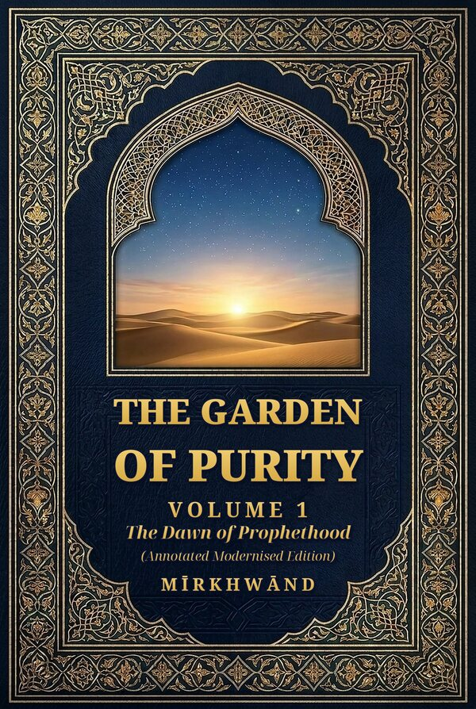

The Garden of Purity, Volume 1
The Dawn of Prophethood (Annotated Modernised Edition)
The life of the Prophet Muḥammad ﷺ as told by the fifteenth-century Persian historian Mīrkhwānd in his Rawḍat al-Ṣafā, in clear modern British English. This volume follows the story from the Prophet's ancestry and the Year of the Elephant, through the years in Makkah and the Hijrah, to the battles of Badr and Uḥud.
“An exquisite work of Islamic historical writing… The modern edition’s annotations are a welcome gift to readers. Very highly recommended.”Asher Syed, Readers’ Favorite (5 stars)
- Based on Edward Rehatsek’s 1893 translation, rendered into plain modern English
- Several hundred editorial footnotes that identify people and places and note where the account differs from the early sources